CAMBIO frente a 10 referentes regionales y globales, evaluados por palancas visuales que mueven registro, scroll depth e intención de suscripción
Este benchmark cambia el lente: en vez de evaluar diseño editorial en abstracto, mide palancas de conversión expresadas visualmente — paywall, CTAs, captura de email, scroll depth, señalización de contenido cerrado, página de planes. La pregunta de cada celda es: ¿qué hace el referente, visualmente, para mover el funnel — y qué de eso replica CAMBIO con CSS/JS sobre el CMS actual?
El alcance contratado es refresh visual mediante CSS/JS injection. Por eso cada hallazgo termina en una de dos columnas: Ejecutable ahora (refresh) o Fase 2. El benchmark editorial previo se demota a respaldo (Anexo D) — no son dos benchmarks compitiendo, es un solo plan respaldado por evidencia visual.
Nota metodológica honesta
CAMBIO · Verificación directa
Inspección DOM en producción
Cada veredicto de CAMBIO está respaldado por inspección en vivo con Puppeteer + DevTools (mayo 2026): captura de pantalla en desktop (1440 px) y mobile (390 px), getComputedStyle de tipografías y colores, conteo de componentes DOM, y verificación de hallazgos del benchmark editorial preliminar contra el sitio real. Las afirmaciones que la inspección contradijo fueron corregidas.
Referentes · Mixto verificación / inferencia
9 medios externos
Combinación de capturas reales nuevas vía Puppeteer (28-mayo 2026) en home, planes y artículo donde fue posible sin sesión paga; e inferencia documentada para dimensiones que requieren login (NYT, Economist, Le Monde, The New Yorker paywall trigger; checkouts protegidos). Las cifras de industria que aparecen (ej. "+81.6% subs YoY de El Tiempo con Piano") son benchmark histórico, no promesa para CAMBIO.
10.1
Scorecard de conversión · 10 portales × 6 dimensiones
Escala cualitativa de 3 niveles: Ausente (la palanca no existe o es contraproducente) · Parcial (existe pero débil) · Referente (ejecución que vale la pena robar). CAMBIO está resaltado como sujeto de contraste.
Portal
D1 · Paywall visual
D2 · CTAs reg/sub
D3 · Newsletter gateway
D4 · Scroll depth
D5 · Cerrado + jerarquía
D6 · Planes/checkout
CAMBIO(sujeto)
Parcial
Parcial
Ausente
Ausente
Parcial
Parcial
El Tiempo
Referente
Referente
Parcial
Parcial
Referente
Referente
El Espectador
Referente
Referente
Parcial
Referente
Parcial
Parcial
Semana
Parcial
Parcial
Ausente
Parcial
Parcial
Parcial
La Silla Vacía
Referente
Referente
Parcial
Parcial
Referente
Parcial
El País (ES)
Referente
Referente
Parcial
Referente
Referente
Referente
NYT
Referente
Referente
Parcial
Referente
Referente
Referente
The Economist
Referente
Parcial
Parcial
Parcial
Referente
Referente
Le Monde
Parcial
Parcial
Parcial
Parcial
Referente
Referente
The New Yorker
Parcial
Parcial
Parcial
Referente
Referente
Parcial
Lectura del scorecard
CAMBIO está en Ausente o Parcial en TODAS las 6 dimensiones. Cero Referente. Esa es la métrica que justifica el refresh — no es opinión, son palancas medibles.
Las 2 brechas críticas (rojo en el scorecard) son D3 — Newsletter como gateway (ningún CO lo hace bien, CAMBIO ni siquiera lo intenta) y D4 — Scroll depth (sin progress bar, sin reading time, sin recirculación inline).
Los referentes CO que más mueven (El Tiempo, El Espectador, La Silla Vacía) están en Referente en 3-4 dimensiones, todas con tratamiento visual replicable vía CSS/JS. Los anglos (NYT, Economist) tienen mecánicas no replicables (bundle multi-producto, seudónimos), pero su tratamiento visual del paywall y jerarquía sí lo son.
10.2
Las 6 dimensiones, palanca a palanca
Cada dimensión cierra con la intervención CSS/JS concreta y la columna Ejecutable ahora (refresh) / Fase 2. El detalle visual de las propuestas vive en la Sección 7 — Transformaciones CSS.
D1
Tratamiento visual del paywall
Veredicto CAMBIO · Parcial. El paywall tiene diseño funcional (border rojo de marca, CTA amarillo "Suscribirme"), pero el copy es una sola frase genérica: "Suscríbete para acceder a todo nuestro contenido". Sin precio, sin beneficios, sin social proof, sin trial. El diseño existe — falta la persuasión.
Qué robar. El Tiempo, El País, NYT y Economist usan modal con identidad de marca + 1 frase de valor + 2 CTAs (Suscribirme / ¿Ya tienes cuenta?). Economist va más allá con prueba social ("Analysis and insight you won't find anywhere else").
El Tiempo · headline de valorEconomist · prueba socialEl País · modal persuasivo
✅ Ejecutable ahora (refresh): editar PaywallBlock.tsx para aceptar 4 props (título aspiracional, beneficios bullet, precio, microcopy). Reusar el styling actual. 0 cambios en backend. ⚠ Fase 2: reglas de metered, paywall dinámico, segmentación por comportamiento.
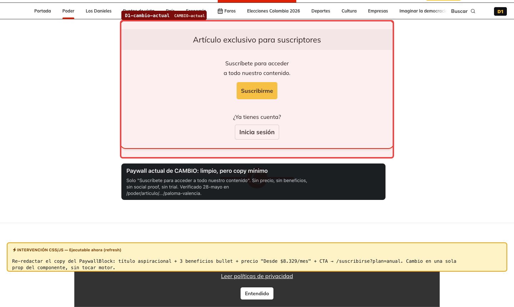
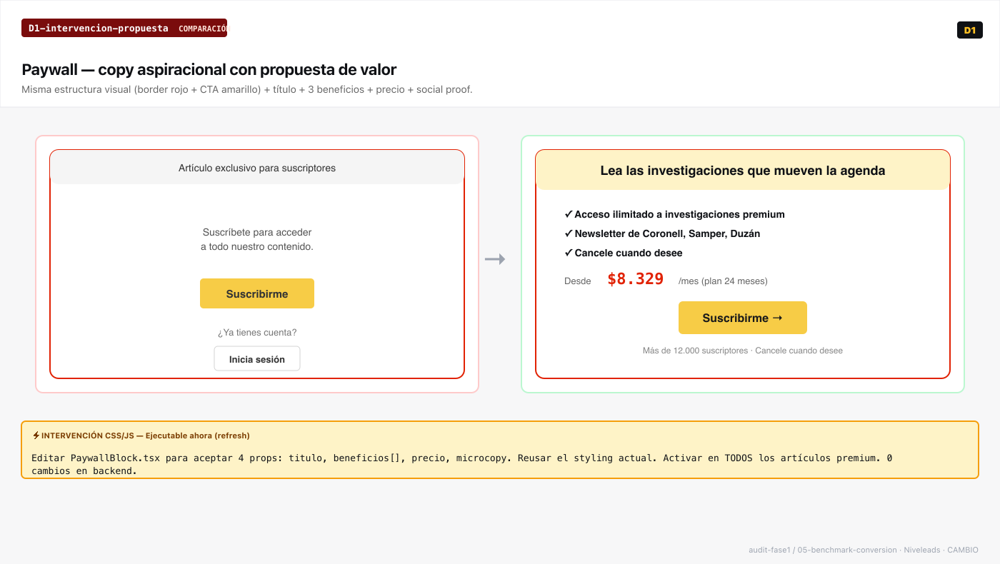
D2
CTAs de registro / suscripción
Veredicto CAMBIO · Parcial. "Suscribirse" amarillo en header (sticky en artículos premium). No hay CTA inline al 60% del scroll del artículo ni CTA persuasivo al final del artículo abierto. Exposición única donde los referentes usan triple exposición.
Qué robar. El Tiempo, El País y NYT exponen el CTA en header + inline ~60% scroll + final de artículo. Copy orientado a beneficio ("Lee sin límites", "Accede a las investigaciones"), no a acción ("Pagar").
El Tiempo · triple exposiciónNYT · CTA + Gift + StudentLSV · Newsletter + Súper Amigos
✅ Ejecutable ahora (refresh): 2 componentes nuevos — <ArticleInlineCTA> al 60% scroll vía IntersectionObserver + <ArticleEndCTA> al final del artículo cuando paywall=false. ~80 líneas TSX + 15 CSS. Incluye el prompt de Google One Tap para captura de nombre/email en frontend (la verificación del token es dependencia del backend de CAMBIO — Etapa 0). ⚠ Fase 2: sesión autenticada completa (login one-tap end-to-end) y personalización dinámica del nombre del usuario en el CTA.
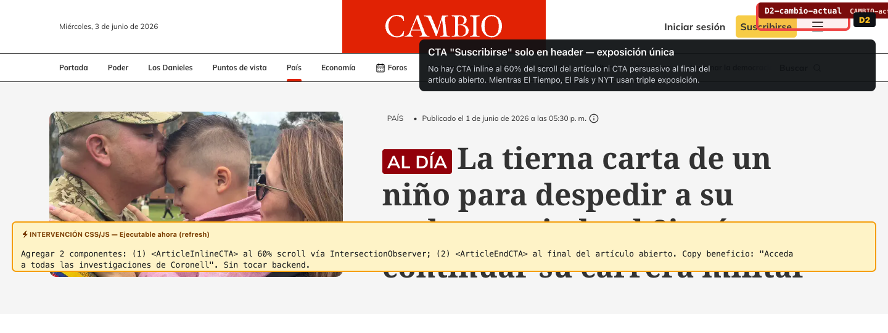
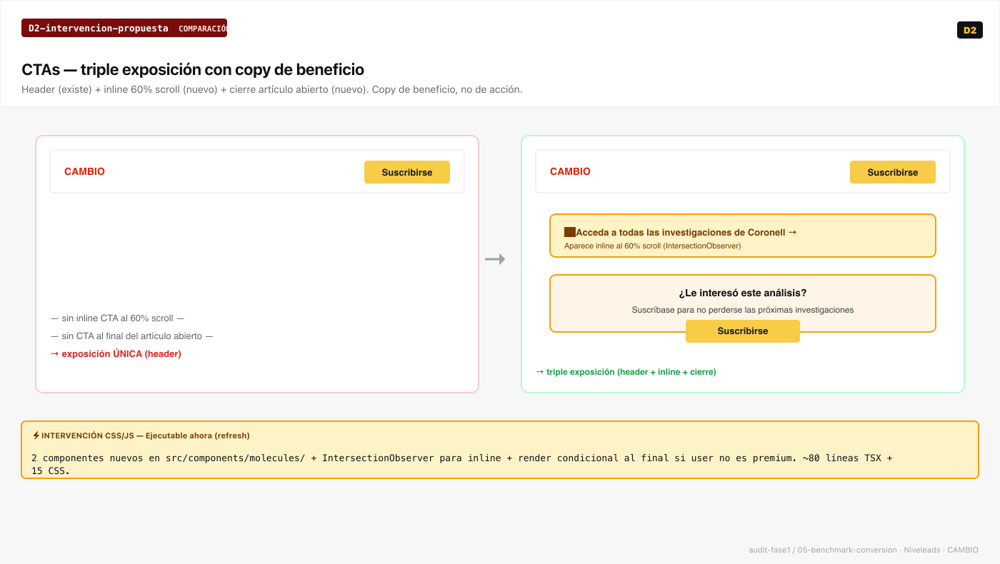
D3
Captura de email · Newsletter como gateway
Veredicto CAMBIO · Ausente. No hay módulo de captura de email inline ni en home, ni en final de artículo, ni en columnas de Los Danieles. "Newsletters" aparece como link de navegación en el footer-menu — no como gateway de conversión. Cero captura de email en el flujo de lectura.
Qué robar. El País y NYT usan newsletter inline al final del artículo con propuesta de valor + preview del último envío + frecuencia. The Guardian (modelo): newsletter es la palanca de retención antes de pedir pago. CAMBIO tiene Coronell, Samper y Duzán — palanca natural.
Guardian · gateway primarioEl País · newsletter segmentadoNYT · newsletter por autor
✅ Ejecutable ahora (refresh): crear <NewsletterCapture> organism con foto del columnista + frecuencia + form de email + CTA. Renderizar al cierre de ContentArticle cuando articleType="opinion". Backend de email ya tiene listas por autor — no requiere segmentación nueva. ⚠ Fase 2: preference center, automation por comportamiento, segmentación dinámica.
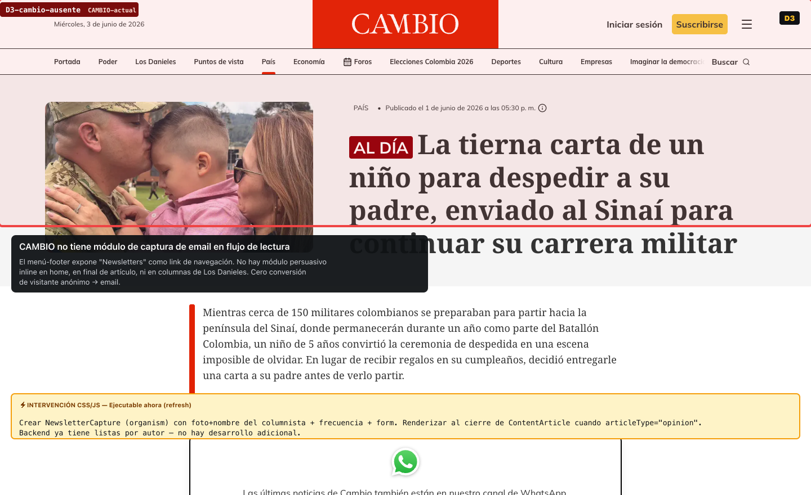
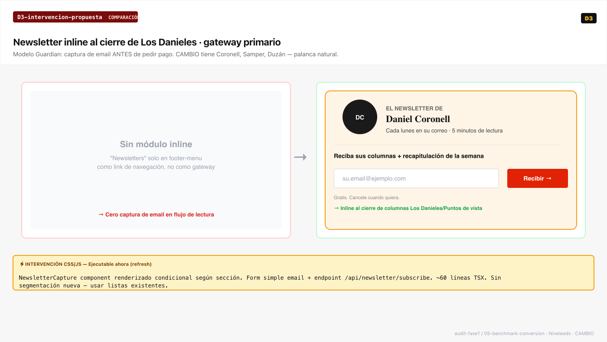
D4
Profundidad de lectura · scroll depth
Veredicto CAMBIO · Ausente. Artículos sin progress bar, sin reading time, sin modo lectura, sin recirculación inline. El lector entra, lee, y no tiene por dónde seguir ni cuánto le falta. La única recirculación es al final ("Más de Poder", "Lo último") — cronológica genérica.
Qué robar. NYT, El País, Le Monde y Economist tienen progress bar sutil + reading time + columna de lectura estrecha (600-650px). El Espectador agrega recirculación inline con emojis temáticos ("💰📈 ¿Ya se enteró...?") cada 4-5 párrafos. Industria documenta +15% de scroll depth con progress bar.
NYT · progress + bookmark + shareEl Espectador · "Lea también:" con emojisLe Monde · barra de accesibilidad
✅ Ejecutable ahora (refresh): 4 componentes en ContentArticle.tsx — <ReadingProgress> (~20 líneas JS = scrollY/scrollHeight), <ReadingTime> (10 líneas, words/200wpm), <ReaderModeToggle> (toggle clase CSS), <InlineRecircSlot> (slot CSS cada 4 párrafos). ⚠ Fase 2: lógica contextual de qué artículo recircular (queries por tema/autor en backend).
Veredicto CAMBIO · Parcial. La pieza editorial dominante existe pero queda debajo del strip "Al día", fuera del ATF. Cards de los grids de sección son visualmente uniformes. Badge "Suscriptores" es texto plano sin ícono ni color aspiracional. 3-4 niveles de jerarquía verificados (no 2 como decía el benchmark anterior — la inspección directa lo corrigió).
Qué robar. El País (4 niveles maduros + color naranja para opinión + lock aspiracional), NYT (hero cinematic dominante + lock sutil), La Silla Vacía (densidad baja deliberada con feature editorial — pero el principio, no las ilustraciones propias).
El País · 4 niveles + naranja opiniónNYT · hero cinematic + lockLSV · principio de curaduríaEconomist · lock aspiracional
✅ Ejecutable ahora (refresh): tres palancas combinadas — (a) reordenar bloques en ContentHome.tsx subiendo la pieza dominante encima del strip "Al día"; (b) modificar ArticleBadge con variant exclusivo (ícono lock + bg cálido + border-left primary 3px); (c) complementar el eyebrow "Al día" con tipologías editoriales (Investigación, Análisis, Crónica, Opinión) — render condicional + governance editorial. ⚠ Fase 2: mezcla 70/30 abierto/premium en módulos de relacionados (modelo NYT) — requiere lógica de queries.
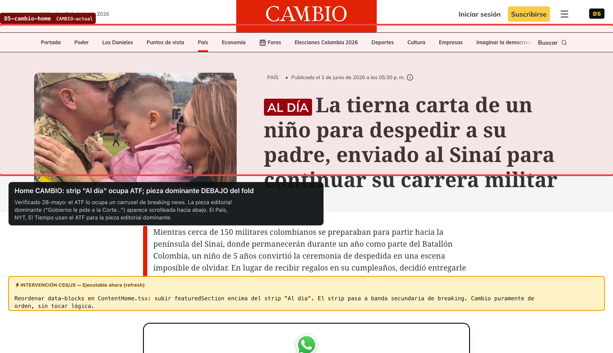
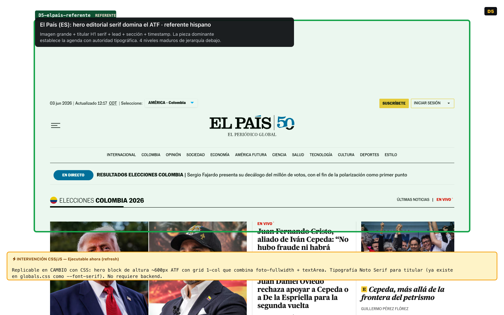
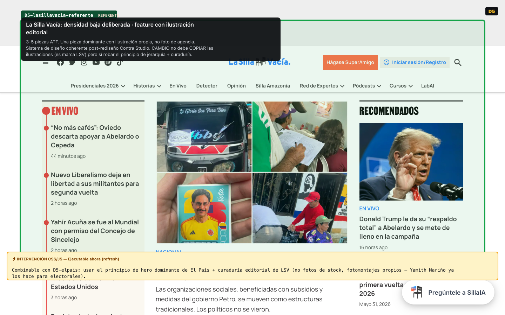
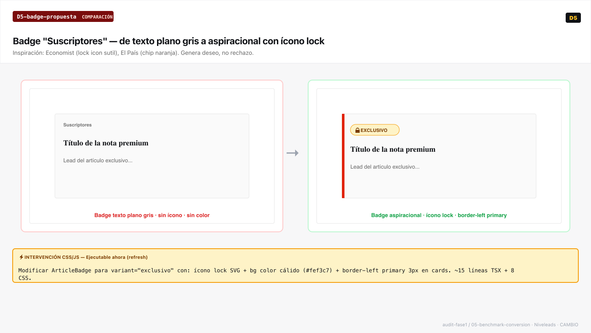
D6
Página de planes y checkout · jerarquía + persuasión
Veredicto CAMBIO · Parcial. Tres planes con precio visible + badge "Recomendado" + "Ahorra 30%/35%" están bien. Faltan tres palancas Baymard: social proof estático, FAQ inline y garantía visual. Hay una incoherencia que también tiene El Tiempo: el badge "Recomendado" está en 12 meses ($9.158/mes) pero el mayor ahorro está en 24 meses ($8.329/mes) — anchoring inverso.
Qué robar. El Tiempo entra como referente canónico de D6 por contexto colombiano (NYT baja a secundario porque su bundle multi-producto está en "no copiar"). El Tiempo usa headline de valor ("el periodismo más premiado de Colombia"), anchoring mensual en planes largos ("equivale a $10.121/mes"), tabla comparativa inline (~18 filas, no en acordeón), y "Cancela cuando quieras" prominente. El detalle ampliado vive en la Sección 9 — Análisis 360°.
El Tiempo · referente CO canónicoEl País · social proof + comparaciónNYT · arquitectura visual (sin bundle)
✅ Ejecutable ahora (refresh): 3 bloques en /suscribirse — <SocialProofChip> (banda con "N suscriptores"), <PlanesFAQ> (Accordion shadcn ya existe), <GuaranteeBar> (banda al pie). Sacar la tabla comparativa del acordeón. Decisión con cliente: mover badge "Recomendado" al plan 24 meses o agregar microcopy "Mejor precio por mes". ⚠ Fase 2: trial gratis real, reducción de campos en checkout (backend), A/B de pricing, Club Vivamos tipo El Tiempo (requiere alianzas comerciales — business development).
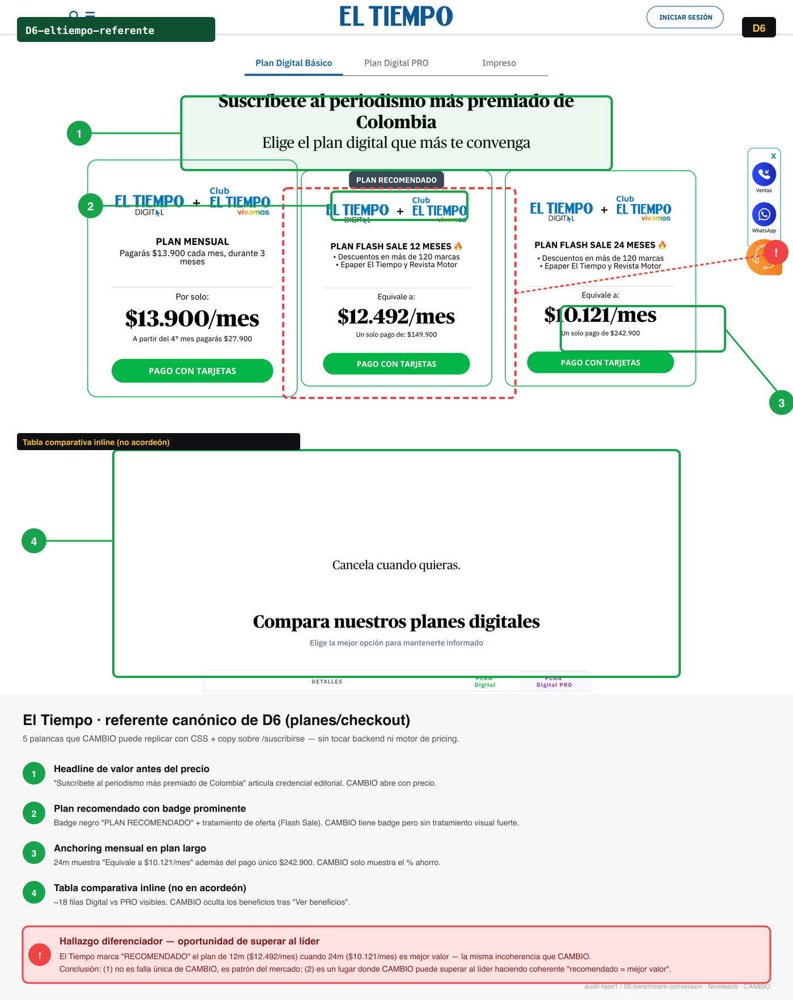
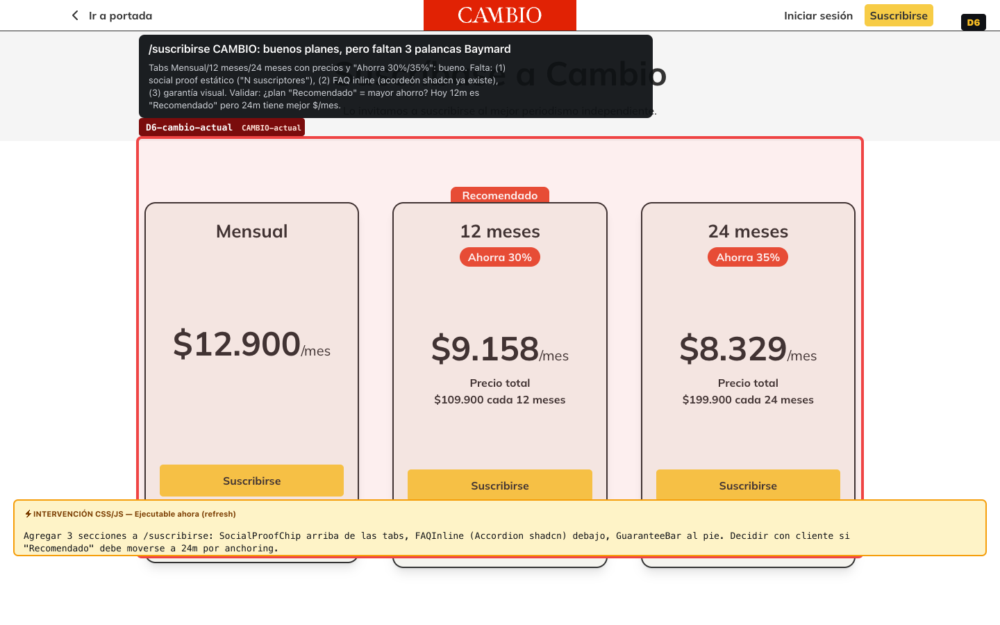
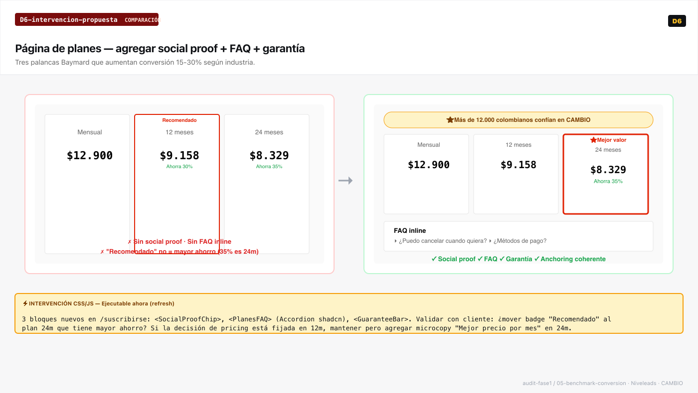
10.3
Qué robar de cada portal · una línea
Una sola mecánica visual replicable por sitio. Sin inflar el catálogo: el cliente recuerda 10 líneas, no 60 celdas.
El Tiempo
Headline de valor ("el periodismo más premiado de Colombia") + triple exposición de CTA + tabla comparativa inline visible (no en acordeón).
El Espectador
Recirculación inline con emojis temáticos cada 4-5 párrafos + audio IA "Resume e infórmame rápido" como teaser antes del paywall.
Semana
Hero editorial con timestamp relativo prominente + grid de 3 cards medianas bajo el hero (jerarquía clara desde el ATF).
La Silla Vacía
Densidad baja deliberada con feature/hero + curaduría editorial (el principio; no las ilustraciones propias — eso es marca LSV).
El País (ES)
Color naranja para opinión + 4 niveles de jerarquía maduros + plan recomendado con social proof.
NYT
Hero cinematic dominante + lock icon aspiracional + bundle de CTAs (Subscribe / Gift / Student). NO el bundle multi-producto.
The Economist
Badge "Lock" aspiracional sutil + modal de paywall con identidad de marca fuerte + "Print + Digital" como upgrade.
Le Monde
Barra de herramientas de accesibilidad (tamaño texto + modo lectura) + recirculación "Sur le même sujet" discreta.
The New Yorker
Tratamiento autor-marca con foto grande + bio extensa + archivo completo (CAMBIO con Coronell, Samper, Duzán).
10.4
Modelo y reglas de paywall · contexto, no ejecución
Esta dimensión (D7) queda fuera del scorecard porque toda su mecánica vive en Fase 2: el refresh visual no implementa motor de paywall ni segmentación dinámica. Va aquí como contexto para enmarcar hacia dónde puede evolucionar el modelo cuando llegue ese sprint.
Portal
Tipo
Reglas / motor
Estado contractual
CAMBIO
Soft / freemium
Marcado "Suscriptores" en cards · hard paywall al entrar al artículo premium · sin metered
Refresh no lo toca
El Tiempo
Dinámico (Piano)
Personalización por usuario, metered count, segmentación. +81.6% subs YoY documentado
Fase 2 estratégica
El Espectador
Metered
Artículos premium + audio IA "Resume e infórmame rápido" antes del paywall
Fase 2
La Silla Vacía
Membership
Modelo "Súper Amigos" — comunidad + acceso. Distinto a access-paywall
Fase 2 estratégica
NYT · Economist · Le Monde · El País
Metered maduro
Años de iteración + bundle / print+digital / trials / estudiantes
Fase 2
Conclusión D7: el refresh PUEDE aterrizar el tratamiento visual del paywall sin cambiar la mecánica subyacente. Cuando Fase 2 evolucione el motor (metered, dinámico), el tratamiento visual ya estará listo para absorberlo. No se vende motor en este sprint.
10.5
Qué NO copiar — anti-recomendaciones explícitas
Heredadas íntegras de la matriz comparativa (benchmark editorial previo, ahora Anexo D). Tan importante como saber qué copiar es saber qué no copiar. Estos patrones funcionan para sus medios de origen pero no aplican a CAMBIO por contexto, audiencia o escala.
✕
Densidad baja tipo NYT/Economist
3-4 piezas above the fold funciona para audiencia anglo premium. Para audiencia colombiana que espera "panorama del día" denso, no aplica. Copiar la jerarquía del NYT, no su densidad.
✕
Seudónimos tipo The Economist
Bagehot, Charlemagne y Lexington son un modelo cultural anglosajón. En Colombia los columnistas son marcas personales — "Los Danieles" ya tiene la semilla correcta.
✕
Bundle multi-producto tipo NYT
Games + Cooking + Wirecutter + The Athletic requiere portfolio que CAMBIO no tiene. Profundizar valor editorial core, no diversificar.
✕
Eliminar "Los Danieles" por parecer redundante
Es activo de marca real. Daniel Coronell y Daniel Samper son razones de suscripción verificables. El problema es el tratamiento visual, no el concepto.
✕
Comentarios abiertos
Comentarios sin moderación degradan calidad percibida. Modelo cerrado tipo "Súper Amigos" LSV o gated para suscriptores (El Espectador) son alternativas.
✕
Ilustraciones tipo La Silla Vacía
Las ilustraciones editoriales son LA marca de LSV. Copiarlas se percibe como imitación del competidor más cercano. CAMBIO necesita lenguaje visual propio.
✕
Personalización algorítmica
Requiere inversión en data engineering fuera del alcance de UX/UI. Curación editorial + newsletter segmentado es más eficiente y más creíble.
✕
"Especiales" como sección editorial ambigua
Si tiene patrocinio, marcar inequívocamente. Si es editorial genuino, llamar "Investigación CAMBIO" o "Análisis CAMBIO" con badge diferenciado. La ambigüedad erosiona confianza en LATAM más rápido que en mercados anglo.
Conclusión del benchmark de conversión
CAMBIO no necesita reinventar el modelo de conversión: las palancas existen y son visualmente replicables. Lo que falta es activarlas.
Cada una de las 6 dimensiones tiene una intervención CSS/JS concreta que cabe en el alcance del refresh contratado. Ninguna requiere motor de paywall, lógica de segmentación dinámica o cambios en backend. El benchmark cierra con un solo plan — el de Sección 7 — respaldado por 16 evidencias visuales anotadas (Anexo C) que mapean línea a línea las palancas que mueven registro, scroll depth e intención de suscripción.
El benchmark editorial previo (8 dimensiones contra 8 referentes) está conservado íntegro como Anexo D. Su Top 10 quedó mapeado a las intervenciones de la Sección 7 — el cliente ve un solo plan respaldado, no dos benchmarks compitiendo.
11
Roadmap de Fases
Qué se hace, cuándo, en qué orden y con qué dependencias durante las semanas que quedan del proyecto
El proyecto completo está dimensionado en 13 semanas. Las dos primeras se invirtieron en el diagnóstico estratégico que recoge este reporte. Quedan, por tanto, entre 9 y 11 semanas para implementación, sincronización con el brand book y testing en cascada. Este roadmap no es una proyección optimista: es el cronograma operativo sobre el que Nivelics se compromete, con los puntos de control y las dependencias declarados de forma explícita. El principio de gestión es simple — las transformaciones que no dependen de terceros avanzan desde la semana 5; las que sí dependen se secuencian para no bloquear el sprint principal.
11.1 Timeline del proyecto completo
Las 13 semanas distribuidas por flujo de trabajo. El diagnóstico está cerrado; la implementación y el testing se solapan en la segunda mitad del cronograma.
Cronograma de actividades del proyecto distribuidas en 13 semanas. El diagnóstico ocupa las semanas 1 a 2; la migración técnica y la coordinación con el brand book las semanas 3 a 4; la implementación CSS las semanas 5 a 10; el testing A/B las semanas 8 a 13; y el cierre la semana 13.
Las 32 transformaciones priorizadas en la Sección 7 se reparten en tres niveles de prioridad. La secuencia respeta dos restricciones reales: lo que aplica hoy sobre el Next.js actual se ejecuta primero, y lo que cae sobre código legacy (Eventos, Especiales) espera a la migración técnica.
P09Semanas 5–7
Quick wins de alto impacto y transformaciones que aplican de inmediato sobre el frontend actual: corrección de target-size en los dots del carrusel (74 nodos en un solo fix), contraste del badge de suscripción (2.87:1 → 7.2:1), jerarquía de la pieza dominante y CTA de suscripción en el header. Ninguna depende del brand book.
P114Semanas 6–10
El grueso del engagement: cascada sobre ContentSectionPage (una inversión, seis secciones), tratamiento editorial de Poder, recirculación interna, eyebrows tipológicos, Los Danieles como puerta de entrada con captura de email, y refresh de la página de planes. Las que tocan paleta o tipografía se secuencian tras la entrega del brand book.
P28Semanas 8–12
Transformaciones que dependen de la migración técnica: hub de Especiales con tipología visual y los despliegues de Eventos una vez migrados al stack unificado. Se ejecutan post-migración para no aplicar refresh sobre código que está a punto de reemplazarse.
Las semanas 10–13 no incorporan transformaciones nuevas: se dedican al refinamiento de las ya desplegadas según los datos que arrojen las oleadas de A/B testing. La optimización es iterativa, no una cuarta tanda de cambios.
11.3 Gestión de dependencias
Tres dependencias condicionan el cronograma. Dos son externas a Nivelics; las tres se gestionan de forma explícita, con mitigación declarada.
Dependencia externa
a · Brand book del rebranding
Estado: en curso por el proveedor de rebranding contratado por CAMBIO. Aún no entregado, sin fecha confirmada.
Riesgo: si se demora más allá de la semana 8, las transformaciones de paleta y sistema tipográfico se postergan.
Mitigación: las transformaciones P0 y la mayoría de P1 no dependen del brand book y avanzan en paralelo desde la semana 5.
Dependencia paralela
b · Migración técnica legacy
Estado: en ejecución por Nivelics en proyecto paralelo. Eventos (WordPress 7.0) y Especiales legacy migran a Next.js. Producción en máximo 4 semanas.
Sincronización: los hallazgos focalizados sobre Eventos y Especiales se aplican post-migración (P2).
Mitigación: no bloquea el sprint principal — la implementación P0/P1 corre sobre el frontend ya unificado.
Etapa 0 · Prerrequisito de CAMBIO
c · Marcación GA4 del funnel
Estado: parcial — hoy solo hay datos básicos del funnel. La marcación completa de eventos (anónimo → registrado → suscriptor) es responsabilidad de CAMBIO.
Impacto: sin la marcación al 100%, el A/B testing no es medible y las hipótesis de la Sección 7 no se pueden validar. Es la Etapa 0 que habilita todo lo demás.
Reparto: CAMBIO provee la marcación completa del sitio; Nivelics define el spec de eventos mínimos que cada A/B visual necesita y verifica que disparen correctamente antes de cada oleada.
11.4 Plan de A/B testing en cascada
Las 3 oleadas y los 14 experimentos definidos en la Sección 8 se ubican en las semanas finales. La capacidad estadística está acotada por el volumen real: 2.5M usuarios en 3 meses (≈ 835k/mes, 72% mobile) permiten significancia rápida en KPIs intermedios, pero exigen un máximo de 2 experimentos simultáneos para no contaminar la lectura.
Oleada 1
Inicia semana 8 · 4 experimentos
Las palancas de conversión de mayor retorno y menor esfuerzo (P0): header CTA sólido (T04), cards premium con badge aspiracional (T02), pieza dominante como hero editorial (T01) y pieza estelar con CTA contextual (T18). Métricas intermedias —CTR a /suscribirse, hit-paywall qualified rate— con significancia en 1–2 semanas.
Oleada 2
Semanas 10–11
Recirculación y captura de registro (P0): Los Danieles como puerta a premium con newsletter inline (T03), recirculación "Lea también" en artículos (T08), barra de progreso de lectura (T13) y la cascada editorial de ContentSectionPage con eyebrow (T05). Métricas: páginas/sesión, scroll depth y email captures.
Oleada 3
Semanas 12–13
Página de planes con labels descriptivos y ahorro visible (T26), recirculación en secciones (T27, T28) y el hub de Especiales. Refinamientos según lo aprendido en las dos oleadas anteriores. Cierra el ciclo de experimentación de la Fase 1.
11.5 Hitos verificables
Puntos de control concretos. Cada uno es comprobable de forma binaria — está o no está en producción.
Semana 4Migración técnica de Eventos y Especiales completada y deployada.
Semana 5Marcación GA4 del funnel (provista por CAMBIO) verificada y activa.
Semana 6Primeras 5 transformaciones P0 en producción.
Semana 8Primera oleada de A/B testing lanzada.
Semana 1050% de las transformaciones P0 + P1 implementadas.
Semana 13100% de transformaciones P0 + P1 en producción; las 3 oleadas de A/B completas.
Compromiso de gestión
Las dependencias se gestionan, no se sufren
Las dependencias externas (brand book) y paralelas (migración técnica) son gestionadas explícitamente por Nivelics. Cualquier desviación del cronograma se reporta semanalmente con un plan de mitigación, no como un hecho consumado.
Compromiso concreto: el 100% de las transformaciones P0 estará en producción en la semana 8, con independencia del estado del brand book. Las que dependen de la identidad visual esperan; las que mueven la aguja del usuario, no.
12
Alineación con el Rebranding
Cómo el refresh visual contratado se sincroniza con el proceso de marca que CAMBIO lleva en paralelo
CAMBIO contrató en paralelo un proceso de rebranding con un tercero. Nivelics no redefine la marca: la ejecuta. Este reporte es un diagnóstico de producto digital; el brand book es la definición de identidad visual. Ambos deben converger en la implementación, y esa convergencia es una responsabilidad que Nivelics asume de forma explícita. Esta sección documenta cómo.
12.1 Contexto
El proveedor de rebranding contratado por CAMBIO tiene como entregable el brand book: paleta de color, sistema tipográfico, iconografía y tono visual de la marca. El refresh CSS contratado a Nivelics se ejecuta sobre las definiciones del brand book una vez entregado. A la fecha de este reporte, el brand book está en desarrollo y aún no ha sido entregado por el cliente. El roadmap de la Sección 11 está construido teniendo esa dependencia en cuenta.
12.2 Cómo se gestiona la dependencia
a
Las transformaciones que no dependen del brand book —jerarquía, recirculación, sub-navegación temática, target-size, contraste— avanzan en paralelo desde la semana 5.
b
Las transformaciones que sí dependen del brand book —paleta de color, sistema tipográfico unificado, iconografía— esperan a su entrega antes de ejecutarse.
c
Nivelics mantiene una conversación quincenal con el equipo de rebranding para anticipar definiciones críticas y validar la coherencia entre el refresh CSS y el brand book.
d
Si el brand book se demora más allá de la semana 8, Nivelics escala con CAMBIO para definir un plan de contingencia: ejecutar el refresh con la paleta actual y aplicar el brand book como segunda capa cuando esté listo.
12.3 Riesgos documentados
Riesgo de incoherencia
El brand book puede definir tratamientos que contradigan el diagnóstico —por ejemplo, una sans pura donde el diagnóstico recomienda conservar la serif editorial para los titulares de artículo.
Mitigación: check-point formal de revisión cruzada antes de cualquier ejecución que toque tipografía o color.
Riesgo de cronograma
Si el brand book llega después de la semana 8, las transformaciones de paleta y tipografía se postergan y se comprime la ventana de implementación.
Mitigación: priorizar las transformaciones independientes del brand book durante las semanas 5–7, de modo que el atraso no detenga el avance.
Riesgo de alcance
El brand book puede contener definiciones que requieran cambios estructurales fuera del alcance de CSS injection contratado (por ejemplo, reorganización de markup o nuevos componentes).
Mitigación: cualquier definición fuera de alcance se documenta como propuesta de Fase 2, con su propio scope, sin asumirla dentro de la Fase 1.
12.4 Compromisos de Nivelics frente al rebranding
Coordinación quincenal con el equipo de rebranding durante toda la implementación.
Validación cruzada del brand book con el diagnóstico antes de ejecutar transformaciones de identidad.
Documentación de cualquier conflicto encontrado, acompañada de una propuesta de resolución.
Comunicación proactiva a CAMBIO si el rebranding genera retraso en el cronograma del refresh.
Respeto absoluto del trabajo del equipo de rebranding: Nivelics ejecuta y optimiza, no redefine.
Capa de ejecución, no de redefinición
Nivelics opera como capa de ejecución y optimización sobre las definiciones del brand book. El éxito del refresh visual depende de la coherencia entre el diagnóstico estratégico de este reporte y la identidad que defina el rebranding. Gestionar esa coherencia es una responsabilidad explícita de Nivelics —no un supuesto que se da por sentado.
13
Próximos Pasos y Decisiones
Las 6 decisiones que el equipo CAMBIO necesita confirmar esta semana para arrancar el sprint de implementación
El reporte termina aquí; el proyecto arranca esta semana. Esta sección no recapitula — define exactamente qué decisiones necesita tomar CAMBIO para que la implementación empiece sin fricción. Cada decisión incluye qué se decide, por qué importa, la recomendación de Nivelics y una fecha límite sugerida.
13.1 Decisiones a confirmar esta semana
a
Aprobación del alcance
Esta semana
Confirmar que las 32 transformaciones priorizadas en la Sección 7 se aceptan tal cual.
Por qué importa: define el contenido exacto del sprint. Si CAMBIO quiere reordenar prioridades, este es el momento de hacerlo sin coste.
Recomendación Nivelics: aprobar el set completo; las prioridades P0/P1/P2 ya están ordenadas por impacto y dependencia.
b
Marcación GA4 del funnel al 100% (Etapa 0)
Antes de semana 5
Completar y proveer la marcación de eventos del embudo (anónimo → registrado → suscriptor) y dar a Nivelics acceso de lectura para verificar y medir los A/B tests.
Por qué importa: es la Etapa 0 del proyecto. Sin la marcación completa, el refresh se ejecuta pero su impacto no se puede demostrar y el A/B testing no es medible. Es el cuello de botella de todo lo demás.
Recomendación Nivelics: arrancar esta semana; suele tardar por permisos internos. Nivelics entrega el spec de eventos mínimos requeridos para que el equipo de CAMBIO los implemente sin ambigüedad.
c
Coordinación con el equipo de rebranding
Semana 1 del sprint
Agendar la primera reunión de check-point con el proveedor de rebranding.
Por qué importa: habilita la validación cruzada temprana y reduce el riesgo de incoherencia entre diagnóstico y brand book.
Recomendación Nivelics: primera reunión en la semana 1 del sprint, con cadencia quincenal a partir de ahí.
d
Herramienta de A/B testing
Antes de semana 8
Confirmar la herramienta: GTM con variants custom, VWO, Optimizely u otra.
Por qué importa: determina cómo se montan y miden los experimentos de la primera oleada (semana 8).
Recomendación Nivelics: dado el volumen verificado (2.5M usuarios / 3 meses, 72% mobile), GTM + variants cubre la primera oleada sin coste de licencia; reservar VWO/Optimizely para fases de mayor sofisticación.
e
Proceso de reporting
Semana 1 del sprint
Definir cadencia de reportes e interlocutor único del lado CAMBIO.
Por qué importa: la transparencia semanal sobre avance y dependencias depende de tener un canal y un responsable claros.
Recomendación Nivelics: reporte semanal con el equipo CAMBIO, mensual con dirección; un único interlocutor que centralice decisiones.
f
Alcance de Fase 2
Sin presión · tras Oleada 2
Dejar la conversación de Fase 2 abierta, sin presionar la contratación.
Por qué importa: Fase 2 (paywall, planes, checkout) gana fuerza con los datos de las primeras oleadas. Decidir antes de tenerlos sería prematuro.
Recomendación Nivelics: revisar la conversación después de la Oleada 2 del A/B testing, ya con evidencia sobre la mesa.
13.2 Lo que arranca el día 1 del sprint
Verificación de la marcación GA4 del funnel provista por CAMBIO (Etapa 0) y entrega del spec de eventos mínimos para los A/B.
Implementación de Microsoft Clarity en el sitio principal (hoy solo está instalado en el subdominio de Eventos, perdiendo data del 99% del sitio).
Setup de la herramienta de A/B testing elegida.
Kickoff con el equipo de rebranding (primera reunión de check-point).
Inicio de las primeras 5 transformaciones P0 que no dependen del brand book.
Auditoría inicial de performance en producción: baseline Lighthouse para trazar la mejora.
Microsoft Clarity: un quick win gratuito de día 1
CAMBIO tiene Clarity instalado únicamente en el subdominio de Eventos. Clarity es una herramienta gratuita de Microsoft que se implementa en cerca de 5 minutos y aporta:
Heatmaps de clicks, scroll y movimiento del mouse.
Session recordings del comportamiento real de usuarios.
Detección automática de comportamientos problemáticos (rage clicks, dead clicks, scroll excesivo, errores JS).
Para un sitio con 2.5M usuarios trimestrales, es data masiva de comportamiento real que hoy se está perdiendo. El impacto sobre la calidad del análisis de UX y la priorización de transformaciones futuras es significativo.
No reemplaza a GA4, lo complementa: GA4 mide qué pasa (eventos cuantitativos); Clarity muestra por qué pasa (comportamiento cualitativo).
13.3 Cómo se mide el éxito del proyecto
El éxito de este refresh no es estético: es de conversión, y es medible. La regla para leer esta tabla es partir el funnel, no la conversión: el refresh visual mueve la parte alta y media del embudo —descubrimiento, registro, captura de email, recirculación, intención de suscripción—, que es justamente la que alimenta la conversión a pago. El salto final a suscriptor pagado vive aguas abajo, en el motor de paywall (Fase 2) y en la instrumentación del checkout (Etapa 0). Comprometemos lo que el refresh sí mueve; lo demás se documenta con honestidad, no se promete.
Comprometidas · palancas de conversión que el refresh mueve
Recirculación interna: 17.8% → > 25% (páginas/sesión, medible en GA4).
Captura de registro / desanonimización: lectores anónimos → registrados vía newsletter inline (Los Danieles) + Google One Tap. Baseline de email hoy: 0.3% del tráfico.
CTR a /suscribirse desde el header CTA y la pieza estelar del home.
Hit-paywall qualified rate: clics al muro deliberados, no accidentales.
100% de transformaciones P0 + P1 en producción + al menos 3 oleadas de A/B testing completas.
Baseline e higiene · se miden y reportan, no se comprometen como objetivo
CTR promedio: cards refrescadas vs. actuales.
Scroll depth en artículos largos (baseline: 37.82%).
Performance del Home (hoy 13) y Best Practices (hoy 54): se reporta el baseline y la mejora incidental que traiga el refresh; la optimización profunda es Fase 3 (requiere ingeniería, no CSS).
Aguas abajo del refresh · dependen de Fase 2 / Etapa 0
Conversión final a pago: no es que no la persigamos — el refresh mueve el funnel que la alimenta (registro, email, recirculación, intención). El salto a suscriptor pagado depende del paywall persuasivo (Fase 2) y de la instrumentación del checkout (Etapa 0).
Retención de suscriptores y churn (no medible en Fase 1).
LTV por plan (no disponible en Fase 1).
13.4 Fases futuras propuestas
Documentadas como siguiente paso lógico, no como venta. Cada una se abre cuando hay evidencia que la justifique.
Fase 2 · propuesta
Paywall persuasivo + Planes + Checkout
Las tres apuestas grandes del análisis CRO. Conversación abierta después de la Oleada 2 del A/B testing, ya con datos de conversión sobre la mesa.
Fase 3 · propuesta
Performance profunda + Buscador + Refactor
Optimización profunda del Home (13 → > 90), buscador con autocompletado y refactor de los componentes técnicos pendientes documentados en el inventario.
Fase 4 · propuesta
Retainer de experimentación CRO
Optimización continua basada en los aprendizajes de la Fase 1. Iteración sostenida sobre el funnel completo.
Cierre del reporte
El reporte termina aquí. El proyecto arranca esta semana.
Nivelics queda comprometido con cuatro cosas concretas:
Ejecución del 100% de las transformaciones P0 + P1.
Instrumentación del funnel desde el día 1.
Gestión proactiva de las dependencias con rebranding y migración técnica.
Reportes semanales y transparentes de avance.
El éxito de este refresh visual no es estético — es medible. Y se mide en las métricas que acabamos de definir.